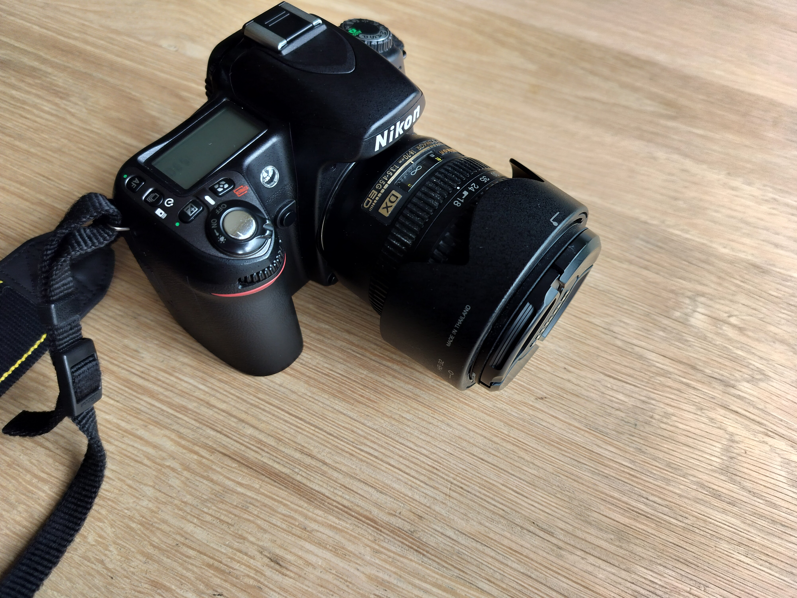

Dit is een beetje liggend aan je budget, natuurlijk zijn camera’s niet zo goedkoop daarom geef ik hier een top drie voor
verschillende budgetten.
Beginnend met een lager budget tot €500
Dan een wat hoger budget tot €800
Systeemcamera’s zijn een beetje een combinatie van een compactcamera en een spiegelreflexcamera, want net als een
spiegelreflexcamera kun je de lens verwisselen, maar zit er zoals bij een compactcamera geen spiegelsysteem in waardoor
de camera compacter is.
Ook zitten op bepaalde systeemcamera’s geen zoeker doordat er geen spiegelsysteem in de camera zit, hierdoor kun je op
de meeste systeemcamera’s een digitale zoeker gebruiken via het ingebouwde scherm.
De compactcamera’s zijn zoals de naam doet vermoeden heel erg compact gemaakt, hierdoor zijn deze camera’s makkelijk mee
te nemen, maar een nadeel aan deze camera is dat de lens niet verwisselbaar is, dus kun je deze camera niet verder
uitbreiden qua lens.
Deze camera’s zijn goed voor beginnend fotografen die niet te veel geld willen uitgeven om te starten, omdat de
compactcamera’s voor hun grote nog steeds mooie foto’s kunnen maken.
Dan de spiegelreflexcamera’s dit zijn de duurste van deze lijst en is ook de standaard voor professionele fotografen
doordat deze camera’s verwisselbare lenzen heeft en hiervan zijn er heel veel om uit te kiezen, daardoor is er ook voor
bijna elke situatie wel een geschikte lens om te gebruiken.
Maar wat ook wel goed is om te weten over deze camera’s is dat zij meestal groter en zwaarder zijn dan alle andere
camera’s, hierdoor zul je voor deze camera’s ook altijd een aparte tas moeten hebben om hem veilig mee te nemen.
